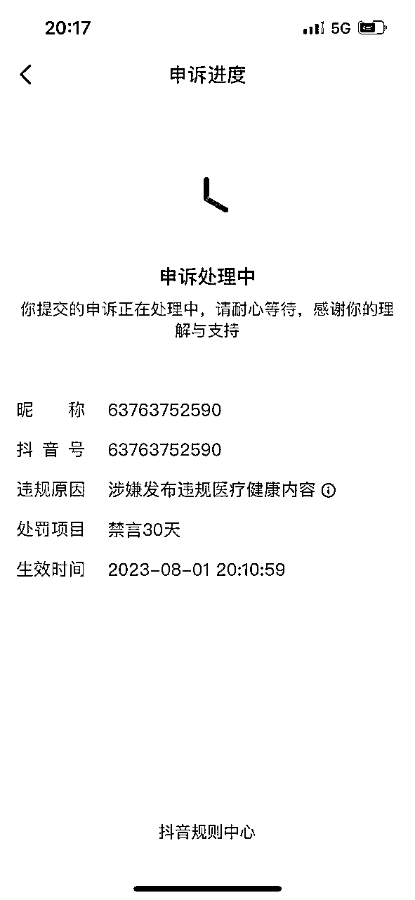
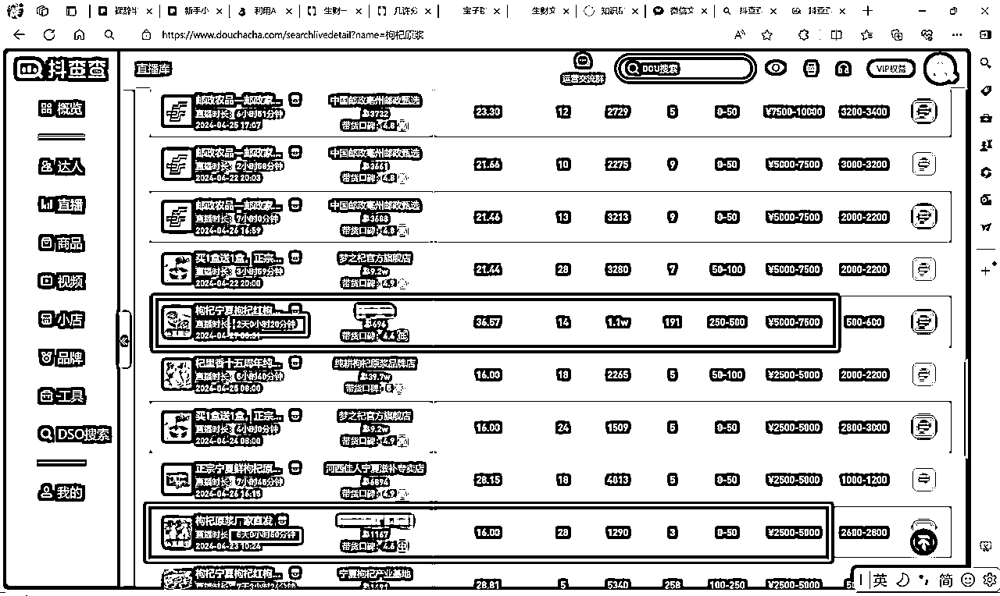
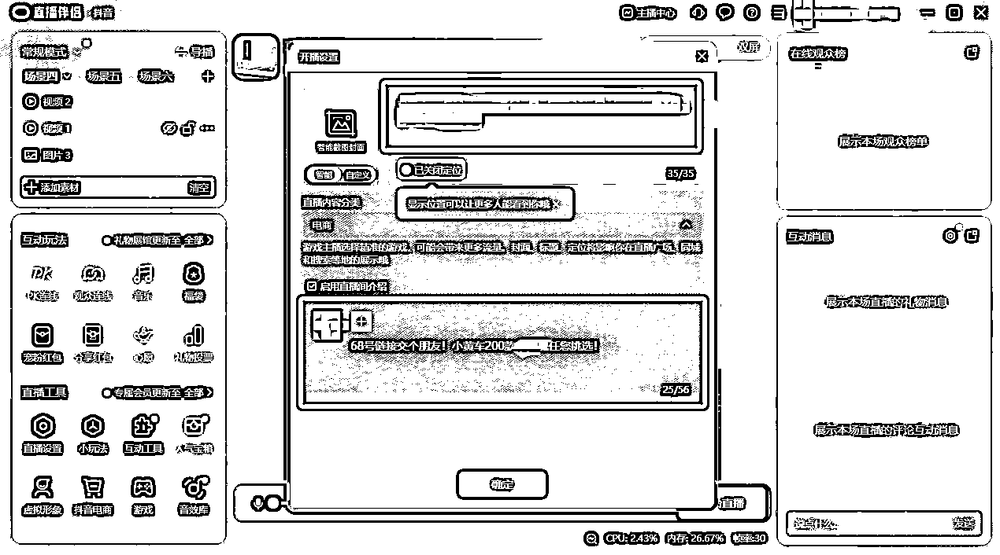
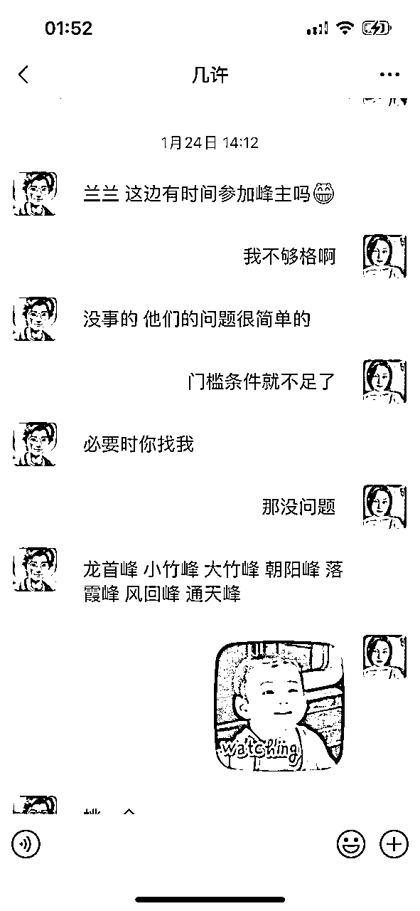
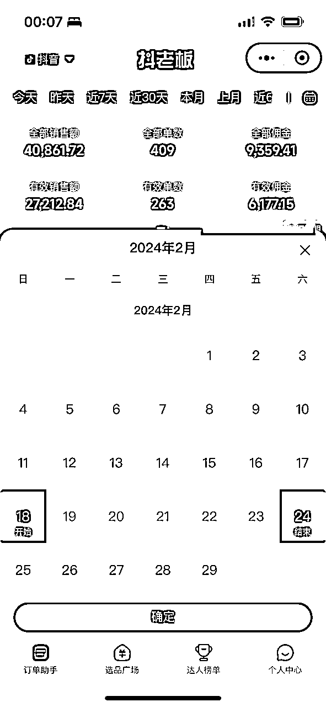

来源：https://iqkghbz2ppm.feishu.cn/docx/LUz5dSOS8obAdfxkqD1cPUzinpb
圈友们好呀~我是兰兰，前互联网HRBP。
原先我只是一个对副业零认知的小小白，却满腔热血裸辞出来探索新世界。
尚未匹配的商业认知，注定了我在创业路上碰得头破血流的结局。
焦虑彷徨中，幸得我两位宝藏师友几许老师和小忌廉推荐的项目，终于逆境突破，实现单月收益3w+，3个月累计收益8w+。
引荐这个项目的忌廉、带我拿到成绩的导师几许，都是生财圈友，不止一次向我展现生财的舞台——一个承载各种搞钱前沿信息的风向标、一个云集各类大佬的大家庭！
所以418毅然加入生财，期望在生财遇到更大的可能性！
时至今日，满打满算也不过40天，但生财中很多精华帖子的内容，不仅大大刷新了我的商业认知！还让我在项目迭代中有了更新更全的思路！
虽然和生财的诸多前辈比起来，这点收益真的微不足道。但这个成绩是自己从0到1，经历了一个个思绪万千的深夜才取得的。
因此，我也希望能对这个难忘的历程做一次复盘总结，既是对未来更坚定信念的起点，也是给一样想破圈、有赚钱欲望的创业人一些陪伴和鼓励：我一个项目小白都能做到的，你们一定也可以！
一、一无所知的勇往直前，注定终是徒劳
二、线下之路，初遇曙光
三、项目复盘
四、日佣金稳定1000+：常怀感恩之心，真诚会有更大的可能性
五、认知上的升级
就像每个男孩的童年都有一个奥特曼，我想每个打工人心里都有一番想成就的事业。
当时不想浑浑噩噩的我，毅然决然裸辞，和中医大学的两位好友合伙创业，准备把抖音、小红书、视频号都干起来！
苦心人天不负，历时一个月，幸运的我很快就拿到了正反馈：
1.小红书播放量破了13w，累计破千粉
2.抖音上爆了一条近30w播放量的视频
取得正反馈以后，更加动力满满！
于是在之前的基础上，无脑复制和投入，也就在这时，喜迎我的第一条广告，收获了800元的广告费！
陆陆续续的，有更多的广告商找上门，一切看上去都如此顺利。
但，人生没有坦途，认知不够，终有教训来补偿。
2023年8月，不过是“高光时期”后的半个月，大爆之后，便是大封。
因为对平台规则不够了解，小红书、抖音接连被封，视频号也是折戟沉沙。

因为没有闭环变现，更没有什么商业结构的概念。在连续几个月0收入的情况下，两个合伙人也选择了“心照不宣的散伙”。
如此被动的局面，我既没有选择放弃，也没有选择死磕，而是选择了第三条路：线下。
既然线上老被封号，那我就走线下，看你怎么封！
于是我去参加各种线下集市摆摊；像一个溺水之人一样，只要有一点机会，都会拼命抓住任何一根“救命稻草”。
线下给我带来的，并不是多少的收益，而是给了我一次破圈交流的机会。
那时忌廉和几位朋友出于支持，来我摊位上买了几包养生茶。闲聊中，我感叹了下自己的经历，以及做自媒体没有引路人的困惑。
没想到，就是这一次交流，让我有了接触“新世界”的机会。
忌廉跟我说，一直在做副业的几许，有一个很不错的项目，让我跟他聊聊。也是那一次，让我第一次听说“生财有术”。
和忌廉说的一样，几许老师很低调，也很耐心。当看到我窘迫的自媒体之路，几许老师伸出了援助之手。
裸辞半年多，经历过短视频大爆、账号被封，至今还在线下艰难摸索零收入的我，认定赚钱不是一件容易的事情。
但是几许老师随后介绍的抖音半真人直播项目，刷新了我的认知！！
这个项目最吸引我的地方，有3点：
①小白也能做，对技术没什么要求；
②投入非常小，只需要一台电脑，一个账号，其他零碎投入总共几百块就能搞定；
③最心动的是！开播就能出单变现，正反馈快如闪电⚡！
当下我就加入了这个项目，拉满执行力，咔咔一顿操作！
转眼3个月就过去了。不仅自己收获了佣金，也因为持续的钻研和真诚的分享，帮助不少小白快速拿到正反馈。
不仅，收获了不少小伙伴的肯定！这些正反馈远比佣金来得更让人振奋和感动！
那么接下来，就让我从一个小白的角度，复盘一下，我是怎么去做这个项目的。
一开始了解这个项目，我是有点懵逼的：抖音真人直播听过，无人直播也听过，半真人是个什么鬼？
后来才发现，这个打法是两者结合起来的蓝海玩法。
本质上，它是真人直播，再转无人运营，简述过程就是：首先真人直播一小时，同时录像；录完以后不下播，把录像循环播放，实现躺赚！
我最长的纪录，就是直播一小时，循环播放 720 小时 1 分钟，也就是躺赚 30 天，成交了近 8w 的GMV！
但传统的无人直播是录制别人的直播间，经过剪辑去重、拼拼凑凑一系列的操作来实现录播；
而抖音半真人直播是自己真人出镜、自己作图搭建直播间，素材都是原创的，大大的降低了违规的风险，真正实现躺赚！
听着简单，但是作为项目小白，我深知自己的差距。基础不够，就笨鸟先飞吧！于是每天都牟足劲去学习、请教，遇到不懂的就问，实操出成绩的就记录好。
很快，我引来了第一个高光时刻：
有场直播，播了不到64小时，GMV就破2W了！！
第6天的时候，GMV已经破4W了！！！
按照20%的佣金来算，我一周内就赚了8K，直接是学费的好几倍，超预期的收益啊啊啊啊~
这个成绩是我入项目前万万想不到的！
接下来，就从项目小白的角度，给大家分享下我超预期收益的项目复盘：
之前自己瞎折腾个人IP的时候，总被网上乱七八糟的课程资料灌输一个认知：流量=收益。
而深入了抖音半真人直播项目，我才知道，流量不是王道，转化才是。
10个带着明确目的来找精准商品的人，远比1000个来直播间瞎溜达的人来得更有价值！
而且抖音半真人直播直播是打搜索流的，这意味着：咱们不和大主播抢流量；我们只精准盯着并钩上有明确搜索意图和消费计划的用户。
那么，精准的搜索量权重就非常关键。只有搜索量权重上来了，我们才有机会让用户看见。
理解了这点，就能时刻警醒自己，如何最大程度的保证每一场直播的”人“、”货“、”场“做到极致统一。
举个例子，我要打男装这个品，那我要明确3个点：
通常我们是通过精选联盟和巨量指数去对比，只要月销量：搜索指数，有10%以上，这个品就可以打。
但是我想了想，如果大家都这么做，那其实很难做出不一样的成绩。
于是，我在10%比例的基础上，做了两点改动：
1.搜索量控制在5w-30w。这个看巨量算数的数据就ok。

2.圈定GMV相对应的人群
这个也很好理解，比如数据分析后低价位（20-50元）的GMV比较好，那我就圈定这个价位的人群，比如学生群体、初入职场的应届生等。
课程中教的选品，只要满足佣金率＞10%、商家综合评分≥80分，都可以咔咔一顿选，全部挂上小黄车来带货。
但是符合这两个要求的品也不在少数。琳琅满目的众多商品，如何让消费者快速购买快速转化呢？
这个问题在我某次逛超市买洗漱用品得到了解答：
我对洗漱用品是有一个预期价格的，超过或低于这个价格，我都不会投向太多的关注。
看到合适的价格和品牌，买完就走了。
转念一想，这不就是搜索流的同款场景吗？
对于那些带着明确目的去搜索商品的用户，心里大概率也是有自己预期的。只要我们把他预期价格的产品都给他找出来，成交转化不就提升起来了吗？！
所以咱们的半真人直播中，要清楚目标群体是适合什么价格区间的，咱们选品链接就挑这类区间的。
不要贪全，不要广撒网；有取舍，才有更大效益的回报。
直播间的场景其实就是我们的店面，只是从线下搬到了线上而已。
同样是逛街，你是喜欢去高大上、简约整洁的专柜；还是喜欢去琳琅满目、活动促销挂满天的超市？
代入到目标客群的角色，就能找到答案，也能知道我们的直播间风格应该是怎么样的、商品要怎么展示等等。
搭建了上百场直播间，研究了几百个同行的场景，总结出一场直播间的场景核心组成部分主要以下：
a.色调风格
b.背景：图、视频
c.标题：文字、排版、动画
d.前置：商品、文字、底部挂片
e.产品：幻灯片、实物、长图滚屏
f.主播：服妆道、滤镜
记住：每一个元素都要紧紧围绕你的目标客群的喜好和需求，转化才会越来越好哦！
直播对账号的基础要求是1000粉，这个找网上的买粉渠道，一天就能搞定了，大概在100元上下。
推荐几个经常用的买粉渠道：
http://wealth8.y677.xyz
http://aisou.xn--49st2e24g0tfkrnp1k.com/
https://wushen.zixyepp.top/#/
（复制上面链接到浏览器打开即可~）
涨到1000粉以后，一定一定记得！！要第一时间开通2个权限：电商带货权限、直播伴侣权限
否则掉到＜1000粉以后没法直播，不仅要补钱刷粉，还得等多一天，老麻烦啦！
【电商带货权限】开通路径：
step1：点击“我”->右上角“三”->抖音创作者中心->抖音电商
step2：开通抖音电商
step3：实名认证
根据引导提示，上传身份证正反面图片进行实名认证即可
step4：绑定银行卡信息
银行卡绑定的信息必须和前面实名的是同一个人，下图中红框的位置是填写银行卡预留的号码

step5：超级管理员信息
以下号码和邮箱也可以自己在用的号码，不一定要和当前登录抖音的号码一样。最后等待审核（几分钟即可）~
【直播伴侣权限】开通路径：
直播伴侣开通有2种方式：A、手机；B、电脑
A、手机端：主页的“+”号菜单->右上角的“电脑”按钮->根据指引，开通权限
B、电脑端：下载并安装 抖音直播伴侣 ，并扫码登录，点击【申请开播权限】点击【确认申请】即可开通成功~
打开抖音APP，前往【我-右上角“三”-创作者服务中心-商品橱窗-立即开通】
点击“保证金缴纳”使用支付宝，缴纳500元保证金，就可以正式开启带货之路啦！
（如果后面不直播带货了，这500元是可以申请退回的哦~）
抖音的账号需要实名认证，还需要绑定对应的银行账户。
但凡没有持续稳定的账号来源，那么账号对我们来说就是稀缺资源！
那么，如何让账号顺利开播不违规，甚至一开播就起飞，流量嘎嘎来呢？
关键是：养号。
新号、老号都需要养号。
尤其是新号，如果没有养个4-7天，很容易出现限流的情况。
我曾经就遇到过，新号没养就直接开播，结果流量和挂了的心电图一样：一条直线。完全没有任何观众进入。
当时我就在找原因：话术是经过预审的；素材基本是抄同行的；商品链接也是评分高没违规的。
那为什么还被抖音拉进小黑屋了呢？
剩下的可能，就只有账号的问题了：账号太新，什么用户行为都没有，一上来就卖东西，抖音很难不认为我们是个野路子的“二道贩子”，大概率也不会给推流的。
这么一分析，我还是乖乖养号了。
保持正常的用户使用行为：
1、每天发发随手拍的视频
2、刷1小时以上的直播：这里注意，不要去搜直播间，要自然刷出来的，越自然越像正常用户
3、花个几块钱在直播送个小心心之类的小礼物
4、下单一些商品：如果不需要，下了单退回去也是ok的~
一周以后，我用同一个账号开播，流量果然嘎嘎来✌✌

选品，在整个半真人直播项目中，真的是让我最沉迷的一个模块了。
如果说开播要准备3天，那1.5天我都沉浸在选品里。
因为几许一直强调：请在选品上多花一点时间，每个品都值得你认真对待。
品选对了，就有点“站在风口上，猪都能飞起来”的爽！所以至今我都觉得，自己的成绩是有点运气的成分~
虽然选好品不容易，那也没想象中那么难，按照这2个方法，都能选到还不错的品：
艺术来源于生活，选品也是。
有一回，已经搜罗了几个想带货的品，但是在纠结到底要选哪个；
刚好那两天看到闺蜜在拆一堆的快递，其中就有一个就是我选品池里的。。。
这个巧合让我意识到，其实生活中很多品都可以带！多留意下身边的人经常买什么、舍得把钱花到哪里去，往往能发掘到很不错的品！
我直接做了一个问卷，让闺蜜们去填写自己最常用、最愿意舍得花钱的东西。
就是这个小问卷，让我挖到了又一个爆品，直播一场，躺赚一两万的那种~
抖音半真人直播，主打的就是小赛道。
说白了，没法和真人直播抢大赛道，那就另辟蹊径，找相对不起眼的“苍蝇腿肉”。
我们通常会用巨量算数来检验找来的小赛道是否能打，只要这个品的趋势向上，平均值＞5w，都可以尝试。
而小赛道的底层逻辑就是：蓝海，避开竞争，闷声发大财。
理解了这点，我就在想：能不能把“避开竞争”发挥到极致？找小赛道中，无人直播的同行都不屑或没留意到的小赛道呢？
答案当然是可以的。而我的方法也很简单：纵向裂变
仔细想，其实不管什么品，总能垂直细分出下一级的品类。
就像细胞裂变一样，好的品类也可以源源不断的更新。
就拿上图的枸杞为例子。既然枸杞符合要求，我想进一步找小赛道，如何纵向裂变呢?
路径可以参考以下：
step1：创作者中心-> 电商带货->选品广场
step2：搜索框中输入品类名称->查看搜索框下方的分类，进一步搜索
看，枸杞中，还有黑枸杞、红枸杞、宁夏枸杞……
step3：看中的品，用巨量算数再确认这个品的搜索指数，又一选品就出来啦！
只看巨量算数这个维度还过于单一。
还需要结合【佣金率】和【销量】来判断：
综合排序下，佣金率平均值≥20%、销量平均值上千的品，基本都可以打：
直播间场景的搭建，听起来很复杂，其实就是：作图。
那对于没有专业作图技术、甚至连美感都没有的小白来说，怎么作图、怎么打造一个好的直播间？
其实很简单，就是：看同行。
而同行那么多，去看哪个比较好呢？
可以借助抖查查，查看这个同行直播间的销售数据
路径：登录抖查查->搜该品的直播间->找到播了超过24小时以上的直播间、销售数据靠前的同行。

根据刚刚提到的6大模块去像素级拆解同行的直播间：
a.色调风格
b.背景：是风景图、商品陈列图、还是视频？
c.标题：内容写什么？怎么排版关键字的？
d.前置：是放底部挂片？还是商品图陈列？
e.产品：文字内容有哪些？放商品图片、实物、还是视频？
f.主播：服妆道、滤镜
就拿刚刚的例子，现场来拆一遍：

a.色调风格：温馨家居、可爱风、偏暖色系
b.背景：ins房间，简约的挂画和装饰
c.标题：文字内容和节日、季节有关；字体可爱俏皮，但没有动画效果；排版是副标题+主标题
d.前置：桌子+商品陈列+水果原材+底部挂片，水果和果汁颜色饱和
e.产品：以视频为主，展现产品的使用场景
f.主播：淡妆清纯，衣服也是简简单单，看起来很舒服很居家的，没有过重的滤镜妆
抄个80分，就已经解决掉绝大部分的问题了，开播效率、成交转化拉满~
千万不要自嗨、沉浸在自己的世界里。同行能出单、能出这么多GMV，就说明是被市场和消费者所接受的。
请记住：同行就是最好的老师！同行就是最好的老师！！同行就是最好的老师！！！
一开始课程让我们去录同行话术，然后直接照搬来念。但是我发现，不仅读起来不顺口，而且逻辑很乱。
我连自己都搞不清楚在说什么，怎么能说服消费者来买单呢？
结果，打脸了，还真能出单（捂脸.jpg)
这让我意识到，在半真人直播中，口播的话术对成交转化，并不是决定性因素：
想想，24小时循环播放的录像，无法逼单、无法实时口播回答别人咨询的问题，还能咔咔出单，主播念稿的东西，很能起决定性作用哇！
但是这个念稿就出单的反逻辑现象，却激起了我的好奇：为什么，我随便念一通、逻辑都不怎么清晰的稿子，消费者都愿意买单？
我从项目的底层逻辑中，找到了答案：
咱们打的是搜索流，进来直播间的人群是带着明确消费目标的。只要别人能搜索到我们的直播间，那就有成交转化的机会。
所以，被【目标客群】【搜索】到，很重要：
这个也可以通过抖查查这类工具来实现：
在“商品”中输入目标品类，点击搜索后可以找到你想打的商品
进入详情页，点击“商品观众画像”，就能更加清晰你的用户群体
对目标客群有一定画像了，那么在话术中，就可以加入生活场景，戳中目标客群的痛点痒点。
标题取得好不好非常关键，直接影响了消费者能不能看到你的直播间。那要怎么取？
👉把自己想成这个产品的用户，如果是自己要买这个品，我会搜什么？
👉看下这类品有什么大品牌，蹭蹭热度
👉在搜索框里输入关键词，看下拉框还有什么长尾词、组合词
至于昵称和头像就很简单了：直接换成XXX（产品）企业店/工厂店/专卖店；头像换成不带logo的产品图
刚刚提到，我们是24小时循环播放的录像，那消费者有疑问打在公屏上怎么办？
既然半真人直播注定口播不能实时回答消费者的问题，那么想要再提升成交转化，就要巧用工具：小不点。
通过小不点的智能文字客服，把消费者可能会问到的问题，整理成关键词，并提前准备好回复，就能大大提升转化啦！
（而且互动的越频繁，流量会越好！）
这里分享一个很好用关键词的收集工具：🍑宝和京东的“问大家”
路径：去🍑宝、京东找同类商品->问大家->看消费者都会问什么，找共性的问题和关键词。
（点进“问大家”，满满的素材啊！！）
定期（早上起床后、午饭前后、6-8点下班期间、睡前）看看直播间的提问，同一类的做个自动回复，收集多了不仅能解决很多消费者的问题，而且能够增加成交的转化！！
小黄车、直播间场景、话术都已经搞定，就可以开播，启动躺赚模式啦！
step1：把准备好的标题复制到“开播设置”，直播间介绍可以留个小钩钩，让消费者多去滑动小黄车

step2：直播设置中的音频，需要注意2个点
①麦克风的输入音量要拉满、降噪要调到-60，才能保证进入到直播间的声音更大更清晰
②扬声器的设备需要和电脑保持一致，要放BGM的时候声音才传得到直播间
step3：把做好的直播间素材，通过场景->添加素材，依次加到直播间，搭建好场景，即可开播！
记得，人的比例要适中，既要占到约画面的1/3，也要和商品的大小保持真实的比例（有一回我打马克杯这个品，结果杯子比头还大，那场直播的战绩贼惨淡！）
总结下来，一场直播想要好的收益，如果想通过某个环节做到极致，把一点放大十倍，很难很难。
毕竟是业余选手，不管是哪一个环节，想要短时间内做到质的飞跃，都有点异想天开。
但是把多个点都分别放大50%，还是很简单的。
选品的时候多对比几个、话术的编辑多看看专业主播、开播后每天花多十几分钟看看消费者的提问来增加关键词的回复和补充小黄车的商品……每个环节钻研多一些，用心多一点，带来的收益却不止一点点。
你是选择1*10，还是选择1*（1+0.5）*（1+0.5）*（1+0.5）*（1+0.5）呢？
锦上添花谁都可以，雪中送炭才难得真意。
我一直很感恩几许老师在我很困顿的时候，给我的指导和帮扶：对一个小白都能不带套路的真诚，这个贵人，我只要有机会，一定是要报答的。
这个机会很快就来了：
可能是我在群里总会积极回复新同学的各种提问，也可能是我的些许成绩让几许老师看到了我的勤能补拙。
在加入项目的第四周，遇上几许老师的交付模式进行创新（从大群中分出小群，诸峰各自命名，由一些师兄师姐作为峰主各自带队，让进入各个峰头的小伙伴可以有更密切的交流，更具归属感的学习），几许老师向我发出峰主的邀请:

坦白讲，我第一反应是畏难的：自己就是个小白，万一把别人教歪了，影响我自己倒没什么，砸了交付口碑我拿什么来请罪？！！
几许老师的一句：”必要时你找我“，马上给我十足的底气了~
那就“峰”吧！说好的感恩，这不就来了吗！
当然，给我自己更大的底气，其实是这个团队真诚的氛围。
群里没有任何一个人会担心泄露了赚钱密码而藏着掖着，真诚的分享一直是大家共同的调性。
所以我相信，只要用真诚去帮助别人，结果一定不会太差。
于是开启了我的峰主模式：只要小伙伴们有疑问、需要远程的支持，我都会尽可能第一时间给予援助。
就像当初几许老师和群里优秀师兄师姐对我的援助那样。
有一度觉得当峰主真的好累啊！
需要一直回应大家的需求。有时半夜都得远程帮忙检查开播参数，甚至觉得耽误自己开播的赚钱速度！！
不过看着每周收益稳步提升，甚至稳定破千佣/天，让我逐渐意识到：我对群里小伙伴的辅导，其实也在强化和夯实我的打号能力。
开号的速度和质量越来越好；遇到流量问题的时候，也能快速诊断出人货场的问题，快速优化以后继续抢流量抢收益！

回想自己近一年的经历，从0商业认知还裸辞的打工人，成长为3个月收益超8w的自由职业者，真的是痛并快乐着。
想站在一个项目小白的角度，和大家分享下不断升级的认知：
不管在任何时候，都不要太看得起自己。
一个人的认知和资源是极其有限的。尤其是刚踏入新领域的小白。
如果想在原有体系内寻求突破，往往是徒劳无功的。
没有外力，难有变化。
设置好自己的容亏底线，只要还没到底，就勇敢一点去突破新系统，获取更多的能量和可能性！
不要以为互联网时代信息足够透明；
信息差其实随处可见。
大到一个小白都能躺赚的项目；小到一个选品环节的工具或操作。
只要自己多主动去琢磨、钻研、复盘，总会比昨天的自己更有可能赚多一点。
如果一味沉浸在 “好难啊”、 “好焦虑”的情绪上，那不仅找不到解决的思路，更找不到继续前进的勇气。
以上，献给曾经向我伸出过援手的每一位前辈和老师以表感谢；
也献给每一位生财的同路人，前进的路上，我们不孤独。
期待在生财的路上，我们都能遇见更强更富的自己！